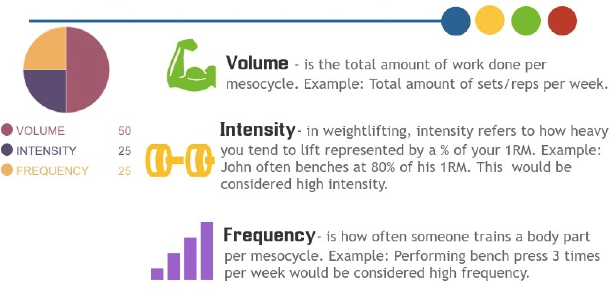

Preface
Creating a gym program is something only I recommend for intermediate to advanced lifters. If you are a beginner it is more beneficial to stick a tried and tested workout split to maximise strength and muscle mass. The principles that I will discuss in this article well help you maximise your progress in the gym if you adhere to them. There are three main princriples to follow: Adherence. Volume, Intensity and Frequency. Progression.
Adherence
It doesnt matter if you have the best workout program, if you don't go to the gym you wont make gains. This is why Adherence is the base of all training.
All you have to remember is REF – realistic, enjoyable and flexible.
It takes self-awareness and restraint to be able to appropriately implement these philosophies into program design, so be sure to “REF yourself” throughout the process. We are not robots, “optimal” is a concept that doesn’t always fit into our realities and the stresses we experience in life are largely out of our hands. Therefore, you need to be sure that the program you develop is specific to your individual life circumstances, considers your individual preferences, and is flexible enough to account for any curve balls life throws your way.
As a student, realisticly I would like to commit my afternoons studying. I find it enjoyable to workout in the mornings to get my day started. My workout program is a 5 day program that focuses on compounds lifts, but I include flexibility with my accessory excercises. I haved followed this routine consistently over the past 2 years which has allowed me to make significant gains in the gym.
Volume, Intensity, Frequency
As a beginner your volume will not start out very high.
Progression
In order to keep getting bigger and stronger you need to gradually increase the training stimulus. This is called The Principle of Progressive Overload. If you are a novice or early stage intermediate lifter, simply setting up a training plan specific to your goals with an adequate work load will produce gains without much effort put into creating a plan to ensure progress. Simply selecting weights that challenge you on a session to session or week to week basis, even with the same set and repetition schemes within the week, will result in a gradual increase in strength and size. However, at a certain stage of your development, a plan for progression will become necessary for continued progress. I like to keep it simple. Increase my lifts by 2.5 pounds a week. If this isnt possible, try to squeeze out an extra rep each workout.